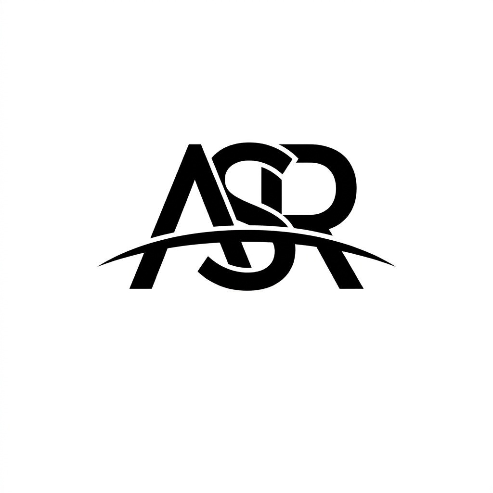

Official Mark
✓ Confirmed
ASR Interlocking Monogram (Pure Glyph)
হোয়াইট ব্যাকগ্রাউন্ডে একক আইকনিক মনোগ্রাম গ্লিফ + ডায়নামিক সুইশ কার্ভ।
Official White Edition

Obsidian Dark Navbar / App Icon

Primary Mark
assets/asr_monogram_glyph.jpg
Dark Mode Transparent
assets/asr_logo_transparent_white.png
Light Mode Transparent
assets/asr_logo_transparent_black.png